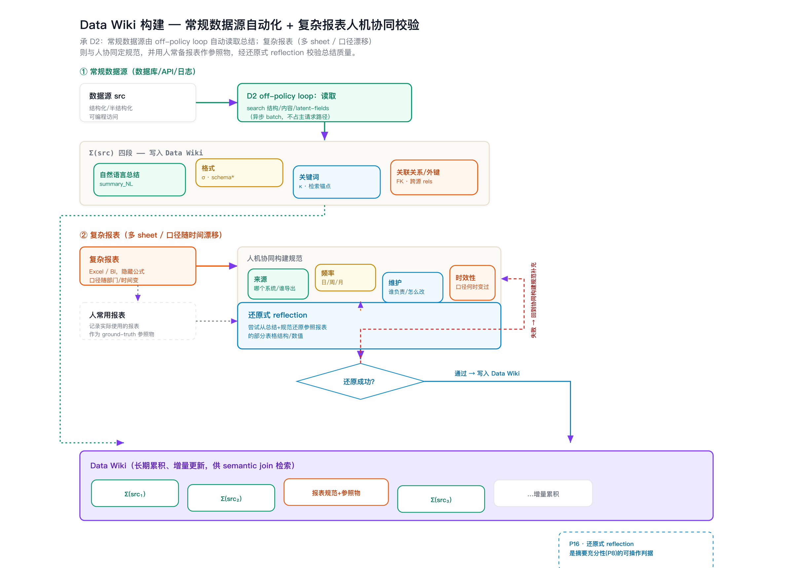
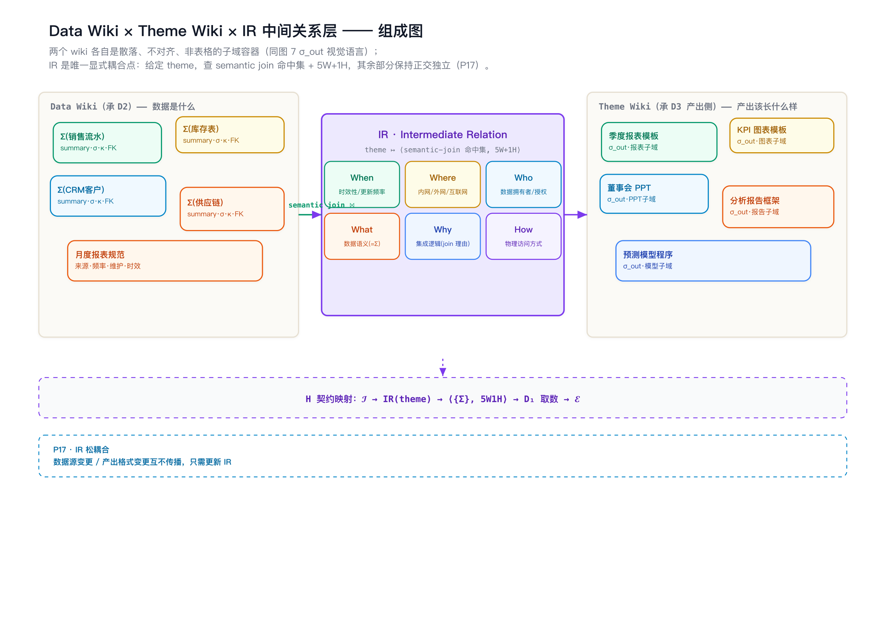
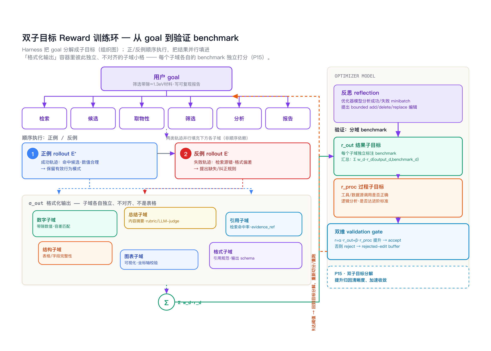
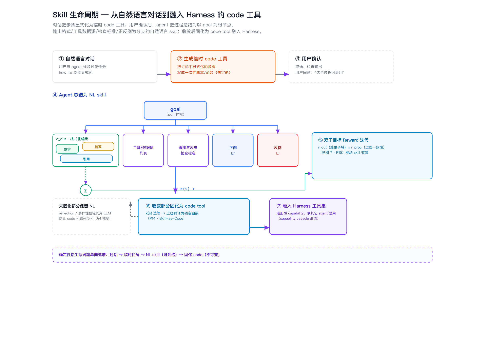

三层栈 ⟨S, H, X⟩ 之外，挂接一个略独立的数据子系统 𝒟。四条正交切分——扩展轴、控制/数据面、数据子系统、并行/局部性——复用同一组解耦不变量；Skill 沿"双子目标 Reward 训练 → 收敛后固化为 code"两阶段生命周期演化，支撑模型版本演进下的可审计、可治理、可运维和可演进。
先用一张图交代整套设计的阅读路径：目标不是再造一个 agent 框架，而是研究一个可扩展、可管理、可审计的 agentic runtime，以及它在逻辑扩展、物理扩展、数据增长和并行协作下如何保持不变量。
A = ⟨S,H,X⟩ + 𝒟，其中 Harness 是把概率性 agent 决策约束为 typed contract、policy gate、verifier/reward 与 audit/replay 的管理性锚点。四类增长——逻辑扩展、物理扩展、数据增长、并行协作——分别落到 CP、DP、栈外 𝒟/off-policy loop 与工具集局部性边界，统一服务于“高内聚高频路径与松耦合低频/离线路径分离”的不变量。每一维问一个不同的问题，但答案都落在同一个解耦机制上：把高内聚的高频路径与松耦合的低频/离线路径分离，从而让 agentic runtime 的扩展与并行过程保持可管理。
逻辑扩展（+task Skill）扩大能力覆盖 𝒯，物理扩展（+Scaffold 实例）扩大吞吐 Θ。二者在效果空间 (𝒯, Θ) 上正交，解耦点是 Harness 契约 H。
逻辑轴 = Skills 物理轴 = Scaffold 解耦点 = 契约 H → P1 / P2 / P3
借分布式系统经典切分：数据面 DP 承载 token 处理路径（∝ token 流量），控制面 CP 承载决策/翻译/维护触发/不变量（∝ 状态事件，与业务流量解耦）。本架构的 CP 部分由 LLM 驱动 → 概率性控制面，需可审计日志 + 不变量约束。
数据面 DP 控制面 CP 概率性控制面（N0） → 2×3 矩阵 · P4 / P5 / P6
这是三层栈之外新增的子系统，刻画 agent 如何理解、访问、治理、维护其被授权的外部数据。它沿在线/离线与 CP/DP 双重分裂：取数在数据面，语义总结是栈外独立 off-policy loop，治理与 lifetime 在控制面。
𝒟 = ⟨D₁,D₂,D₃,D₄,Ω⟩ 栈外独立子系统 → 四组成 · P7 / P8 / P9
前三条切分保证"加东西不劣化"，第四条进一步主动逼近并行上界：给定预算 B，用一根杠杆——按工具集切分子 agent——同时定义 Skills 局部性、并行独立性与 Scaffold seed 边界；同种子 agent 高内聚共置、跨 agent 仅传 summarized context（detail 入 memory）而松耦合。
并行度上界可设计（P10） 工具集局部性（P11） seed 亲和（P12） → 四机制 · walkthrough · specs
统一命题（meta-claim）：四维各自的"加东西 / 并行"操作，其一阶成本都落在与主请求路径解耦的平面 / 子系统 / 松耦合边界上——逻辑扩展落控制面、物理扩展落数据面、数据扩展落离线 off-policy loop、并行度落工具集切分的松耦合接口。故四维共享同一个不变量：把高内聚高频路径与松耦合低频/离线路径分离。这是把"工程架构"提升为"可证明科学主张"的总杠杆。
三层栈、控制/数据面与栈外数据子系统放在同一张图中，先给出全局地图，再展开每一维。
把论文草稿里的 Layer Specs 重新填到三层栈里：L3 只保留用户可感知的 task SkillSpec；system skill 放入 Harness 的维护子系统；数据使用经验沉淀在 D₃，再由 Harness 按需调用。
C1–C6。其中 C5 为核心 novelty。
| 编号 | 命题 |
|---|---|
| C1 | 三层 Scaffold→Harness→Skills，对应"虚机 / 框架运行时 / 前端运行时" |
| C2 | Scaffold：microVM 隔离沙盒，提供执行环境与底层工具 |
| C3 | Harness：memory / context mgmt + 外部工具 + LLM 生成新工具 |
| C4 | Skills：specs / 条件；组装并迭代推送进 context |
| C5 ★ | 双扩展维度：逻辑扩展=加 Skills；物理扩展=加 Scaffold —— 两者解耦 |
| C6 | 分层 NFR：按层设计性能/可靠/可用/安全，承担"数字员工" |
扩展轴问"加什么"，平面轴问"按什么职责分流"。一个职责单元同时有扩展归属与平面归属。
| 数据面 DP（∝ token 流量） | 控制面 CP（∝ 状态事件） | |
|---|---|---|
| L3 Skills | 激活 skill 产生的 context tokens | skill 选择 / 调用 / 终止 / 循环条件判定 |
| L2 Harness | 工具执行流 · M 维护推理的 token 开销 | 契约翻译 H · 路由 · M 触发策略 · 不变量执行 |
| L1 Scaffold | sandbox 计算 · serving 前向 | 实例调度 · 放置 · 隔离边界设定 |
∂L_CP/∂τ̇ ≈ 0 且 ∂L_DP/∂|CP规则| ≈ 0：业务流量不放大控制开销，控制规则复杂化不放大每请求数据面成本。
逻辑扩展一阶效应落控制面，物理扩展落数据面 → 作用平面不同 → 效果正交。P1 的第二个结构性来源。
维护子系统 M 触发逻辑属 CP（θ 阈值 + 状态事件），推理开销属 DP（随物理吞吐线性）。是平面分离的典型实例。
N0 · 概率性控制面（novelty）：经典系统控制面是确定性配置下发；本架构 CP 部分由 LLM 驱动（契约翻译 / M 反思 / tool synthesis），控制决策本身有不确定性 → 需可审计日志 + 不变量执行把概率性控制面约束在安全包络内。这一差异是平面切分的真正贡献点，而非简单套用 SDN。
略独立于三层栈的子系统，刻画 agent 如何理解、访问、治理、维护被授权的外部数据。沿在线/离线与 CP/DP 双重分裂。
on-policy 访问特定源的特定切片，参数化查询 q = ⟨src, scope, time, proj⟩ → R(q)。
运行时数据面 · 在线off-policy loop 𝓛₂：栈外独立异步子系统，自带 loop / sub-agents / 模型，schema-on-read 预总结进不截断 lake。仅 semantic-join 查询接口进主路径。
栈外 off-policy loop把"如何用数据"沉淀为 per-use-case data-usage skill：top-k 权重、可补充关系、何时搜新源。治理从"管边界"升级为"沉淀经验"。
运行时控制面 · 独立 API时新性 + 业务主题口径（有时效的定义）+ 访问 NFR 预算（防空访问与阻塞）。
运行时控制面 · 独立 API契约映射扩展：H: 𝓘 —consult D₃,D₄→ plan —D₁,D₂→ 𝓔。其中 D₁ 与 D₂ 的 semantic-join 查询接口 ⊆ Interface(H)（Harness 直接调用），而 D₂ 的生产 loop 𝓛₂ 在栈外、不被 H 调度。
固定 use case，∂ℓ/∂|src| ≈ 0：加数据源不污染单请求 token 成本，与 P1 物理扩展同构。
off-policy 摘要 Σ 是取数的充分统计量，兼顾覆盖与精度——填补 Halevy 等(2605.28787) 留空的折中路。
随 use case 重复，data-usage skill 使取数决策熵 𝓗(π_data) 单调不增、方差下降。
D₂（语义总结）落地为 Data Wiki：常规数据源由 off-policy loop 自动读取总结；复杂报表则与人协同定规范，并以人常备报表为参照物、经还原式 reflection 校验（P16）。D₃ 产出侧落地为 Theme Wiki：σ_out 各结果子域（报表/图表/PPT/分析报告/数据模型程序……）经双子目标 Reward 验证收敛后登记复用（承 §11 P15）。两个 wiki 之间只有一层显式耦合——IR（Intermediate Relation）：给定 theme，查 semantic join 命中集 + 5W+1H（时效性/使用范围/数据拥有者/数据语义/集成逻辑/物理访问方式），其余部分保持正交独立、松散耦合（P17）。


H: 𝓘 → IR(theme) → ⟨{Σ}, 5W1H⟩ → D₁ 取数 → 𝓔（P17：数据源变更与产出格式变更互不传播，只需更新 IR 记录）。→ 完整推导、Σ 四段展开对照、5W1H schema 与拟命题 P16/P17 的可证伪形式见研究笔记 13-DataWiki-ThemeWiki-IR中间关系层（承 06-数据平面四组成架构、12-Skill作为可训练激活层-双子目标Reward）。
LLM 不是自由循环，而是在 Harness 的 typed contract、policy gate、verifier、reward 和 replayable trace 内做概率性控制决策。Scaffold 与 Data 子系统只通过稳定接口进入 loop。reward 本身是双子目标——结果子目标 r_out 沿输出格式 σ_out 的各子域比对独立标注 benchmark，过程子目标 r_proc 校验是否调用正确工具/数据、完成正确逻辑分析、达到进阶标准；每个 mini-batch 同时计算两维再驱动 skill 迭代（P15），比单一 scalar reward 归因更清晰、收敛更快。
A = ⟨S, H, X⟩ · P1 解耦 · P2 契约充分 · P3 组合不变量
P1（解耦）：逻辑扩展（+task skill）改变覆盖 𝒯，不改变单位 token 维护开销；物理扩展（+Scaffold + 配套廉价维护推理 M）改变吞吐 Θ（总成本随 token 线性），不改变 𝒯。
充要前提：维护开销只依赖 token 流量、不依赖 Skills 语义复杂度。
| 命题 | 内容 | 可证伪形式 |
|---|---|---|
| P1 | ∂Θ/∂|S|≈0 且 ∂𝒯/∂|X|=0（正交） | 固定 S 加 X 测 Θ（近线性）；固定 X 加 S 测 𝒯（Θ 不变）；加 Skills 显著拖垮 throughput 则证伪 |
| P2 | 解耦充分条件 = 良定义契约 H，S 与 X 无直接依赖 | 旁路 H → 观察是否退化为耦合 |
| P3 | 逻辑扩展保持安全不变量 Inv(S)⇒Inv(S∪{s}) | 对标 SCR-Bench (2606.15242) |
在前三条解耦切分之上，给定预算 B，目标是最大化 budget 内并行吞吐：降低串行比 s、提升编排效率 E，逼近阿姆达尔上界 1/s。四条机制共用一根杠杆——按工具集切分。
机制根因（第一性原理）：一次推理 = 内在知识（权重，固定）⊕ context（可变），故 agent 唯一能动的就是组织 context。KV-cache 复用要求前缀逐 token 相同——尾部一变、其后全部失效；因此可控之道是前缀冻结 + 尾部变化：把稳定的工具集/记忆放前缀并冻结，任务变化放尾部。这同时买到三重收益——缓存复用（快，源于 N↓）、注意力不被稀释（准）、并行独立（可切分）。P10–P13 即此根因的四个可证伪投影。
子 agent 复用同一工具集 / harness，context 跨迭代前缀可复用 → attention 命中 H↑（Skills 局部性）。
切分从"工具集不重合"起步，降低跨 agent 依赖 → 串行比 s↓（并行独立性）。
子 agent 间只传摘要、detail 入 memory → 松耦合顺序关系、编排效率 E↑。
同种子共置复用（affinity）、异种分散（anti-affinity）→ 固定资源下并行度 kmax↑。
s = s₀ + λ·ρ(𝒫)，E = E₀ − μ·c̄ctx；吞吐随重合度 ρ↓、跨 agent 传递量 c̄ctx↓ 逼近 1/s。并行上界是切分设计的函数，而非外生常数。
子 agent 工具集越稳定，context 跨迭代前缀命中率 H 越高、单位有效 token 成本越低。
同 seed 共置 + 异 seed 分散，在固定 Scaffold 资源下可容纳的并行子 agent 数 kmax 高于随机放置。
主 agent 规划时先 dry-run 每个候选子任务的工具集闭包与 Scaffold 环境范围，据此切分 → ρ↓、H↑，更逼近 P10 上界（类比 cost-based query planning）。
→ 完整机制、Specs（S-1 partition / S-2 seed / S-3 SummarizedContextSchema / S-4 metrics）与风险见研究笔记 09-并行度与局部性协同设计。
Skill 不是写好就用，而是先训练、后固化的两阶段生命周期：训练阶段用双子目标 Reward 迭代收敛（本节图 7），固化阶段把收敛部分编译为 code tool 融入 Harness（本节图 8，衔接 P14 Skill-as-Code）。
核心定位：把复杂的、用户直接使用的 agent 看作一个权重固定（frozen）的大模型的、前端可编辑的"激活层"——这层就是 skill：⟨goal，输出格式要求，工具集与数据源列表，调用与反思检查标准，正例与反例⟩。训练 agent 本质是训练这个 skill，是一次针对 goal 给 reward 的强化学习式迭代。
核心难点与解法：goal 用自然语言描述，直接给 reward 在颗粒度上很困难，容易退化为"靠人工判断强制收敛"。解法是把 reward 拆成两个正交子目标——结果子目标 r_out（对齐格式化输出 σ_out 的各子域，如数字/总结/引用，每个子域各配独立标注 benchmark）与过程子目标 r_proc（是否调用了正确工具/数据源、是否完成正确逻辑分析、是否达到进入下一步的标准）。每个 mini-batch 同时计算两维、据此调整 skill——P15。由此推出两条硬约束：skill 必须由模型总结、不能人工生成；随迭代收敛、变化不大的子目标可被编码固化，衔接 P14 的 Skill-as-Code。复杂 agent 的调教因此可由不同子 agent 分头调教组成，或由分结果子域的 benchmark 分别指导。

r_out，与 r_proc（工具/数据源调用是否正确、逻辑分析是否达标）共同过双维 validation gate：r=α·r_out+β·r_proc 提升才 accept，否则 reject 进 rejected-edit buffer 并回到目标分解重新切分（P15）。
goal 为根节点的自然语言 skill（组织图分支：σ_out 格式化输出——本身是图 7 那种散落子域容器的缩影、工具/数据源列表、调用与反思检查标准、正例 E⁺/反例 E⁻） → ⑤双子目标 Reward 迭代（图 7 · P15）驱动 skill 收敛 → ⑥κ(s) 达阈后，收敛部分编译为确定函数（P14 Skill-as-Code） → ⑦注册为 capability，融入 Harness 工具集供其它 agent 复用。未收敛部分保留自然语言，防止过早 code 化锁死泛化。→ 完整推导、六要素表、拟命题 P15/N9 的可证伪形式与文献划界见研究笔记 12-Skill作为可训练激活层-双子目标Reward（承 10-Skill-as-Code与确定性固化）。
P1–P15 横跨四条切分、确定性锚与 skill 训练机制，是把架构提升为科学主张的可检验承诺。
| 命题 | 维度 | 一句话 | 证伪条件 |
|---|---|---|---|
| P1 | 扩展轴 | ∂Θ/∂|S|≈0 且 ∂𝒯/∂|X|=0 | 加 Skills 显著拖垮 throughput |
| P2 | 扩展轴 | 良定义 H ⇒ S/X 无直接依赖 | 旁路 H 后仍解耦 |
| P3 | 扩展轴 | Inv(S)⇒Inv(S∪{s}) | 组合后越权 / 不变量破坏 |
| P4 | 平面 | ∂L_CP/∂τ̇ ≈ 0 | QPS↑ 使控制开销同比上升 |
| P5 | 平面 | 逻辑→CP、物理→DP | 二者作用同一平面 |
| P6 | 平面 | M 触发在 CP、开销在 DP | M 触发频率 ∝ 业务流量 |
| P7 | 数据 | 固定 use case，∂ℓ/∂|src|≈0 | 加数据源抬高单请求 token 成本 |
| P8 | 数据 | off-policy Σ 兼顾覆盖与精度 | (c) 摘要不优于 (a)在线/(b)人工 |
| P9 | 数据 | data-usage skill 使取数决策熵单调不增 | 重复 use case 决策发散 / 震荡 |
| P10 | 并行 | 切分设计（ρ↓ + 摘要传递）使吞吐逼近 1/s | 高/低 ρ × 全量/摘要 无差异 |
| P11 | 并行 | 工具集越稳定 → context 前缀命中 H↑ | 工具集稳定性与缓存命中无关 |
| P12 | 并行 | 同 seed 共置 + 异 seed 分散 → k_max↑ | seed 亲和放置无物理局部性收益 |
| P13 | 并行 | 规划期 dry-run 探测工具集闭包/环境范围再切分 → ρ↓、H↑ | dry-run 切分不优于纯语义切分 |
| P14 | 确定性 | code 固化 skill 输出与 θ 版本解耦，∂output/∂θ≈0 | 跨版本重跑 code skill 方差不低于纯 LLM skill |
| P15 | skill 训练 | 双维 reward（结果子域×过程一致性）比 scalar reward 归因更清晰、收敛更快 | 双维 gate 收敛速度/人工干预次数不优于单 scalar gate |
C5 + N0–N9。每条标注主张与对标空白。
| 编号 | 维度 | 创新主张 | 对标空白 |
|---|---|---|---|
| C5 | 扩展轴 | 逻辑 / 物理扩展正交解耦，解耦点=契约层 Harness | 7 篇 2026 文献无一拆正交两维并绑不同层 |
| N0 | 平面 | 概率性控制面（LLM 驱动的控制决策 + 可审计约束） | 经典 SDN/K8s 控制面是确定性配置下发 |
| N1 | 数据 | off-policy schema-on-read 语义总结平面 | Halevy(2605.28787) 留空"后台预总结"折中路 |
| N2 | 数据 | 数据治理即 skill：从"管边界"升级为"沉淀经验" | Five-Plane/DataGovBench 只做合规 enforcement |
| N3 | 跨维 | 数据子系统沿 CP/DP 自然分裂，复用同一平面不变量 | 同一切分解释三层结构 → 架构内在一致性 |
| N4 | 数据结构 | off-policy loop 是栈外独立异步子系统 | 现有工作把语义建模当在线步骤或接口 |
| N5 | skill 理论 | skill 三分：task / system / data-usage | 现有 skill 综述未区分"数据使用"为独立类 |
| N6 | 并行/局部性 | 并行度上界可设计 + 三层局部性协同（工具集切分为单一杠杆） | ICA 启发式 III 只给被动阿姆达尔上界，未给"如何主动逼近" |
| N7 | 并行/局部性 | 规划期局部性预探测（dry-run 切分）：切分输入从"语义"扩展到"工具集闭包 + 环境可行性" | 现有编排按语义/角色切分，未把规划期资源局部性 dry-run 作切分依据（类比 cost-based query planning） |
| N8 | 确定性/skill 形态 | Skill-as-Code 作为确定性锚：验证后的闭合 skill 固化为 code | CodeAct/AutoHarness/Tool-Forge 多讲 code 提效/可组合，未定位为概率控制面的确定性锚与契约稳定器 |
| N9 | skill 训练 | 双子目标 Reward：把 scalar reward 拆为结果子域 benchmark × 过程一致性，解决自然语言 goal 打分粒度难题 | SkillOpt/GEPA/TextGrad 均用单一 scalar/偏好信号，未沿输出格式子域+过程判据结构化分解归因 |
四条切分参考架构 + C5 解耦命题 + Skill-as-Code 确定性锚 + 双子目标 Reward 训练机制；形式化层间契约、平面切分、并行局部性与 skill 生命周期（train→freeze）。
物理轴 throughput 曲线（baseline=Helium/vLLM）；逻辑轴覆盖 vs 成本；数据轴 P7–P9 实验；消融去 Harness / 平面泄漏注入。
组合性安全（对标 SCR-Bench）；Scaffold 隔离；概率性控制面可审计性指标。
多租户 agent 云、按层 NFR、digital-worker；数据子系统 𝒟 落地。